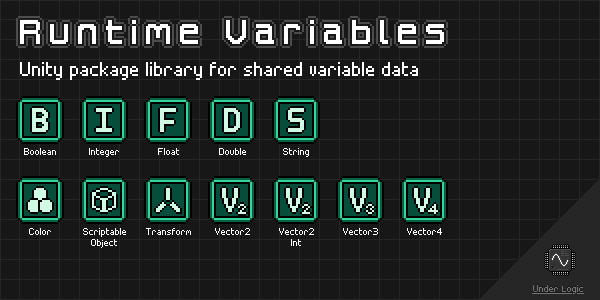

Overview

Unity package library for sharing variable data across components and scenes, allowing other components to react to changes in values.
Heavily inspired by the infamous Unite 2017: Game Architecture with Scriptable Objects presentation by Ryan Hipple (GitHub).
Unfortunately Unity does not understand generics in the Editor and Inspectors, so only concrete types can be used. Fortunately, this can be made easy by deriving from a single generic type allowing the same common behaviors.
NOTE: This package is still in development and may have breaking changes in future versions until a stable v1.0.0 release is made.
Changelog
All notable changes to this library will be documented in this file.
The format is based on Keep a Changelog, and this project adheres to Semantic Versioning.
[0.6.2] - 2022-12-28
Added
ScriptableObjectVariablevariantScriptableObjectWatchercomponent- Icons for variables in the Editor
- Icons for watcher components in the Editor
[0.6.1] - 2022-12-08
Fixed
- Missing meta files
[0.6.0] - 2022-12-06
Added
IObservableinterfaceObservableObjectclassObservableWatchercomponent- Observables sample scene
[0.5.0] - 2022-12-03
Added
ColorVariablevariantColorVariableWatchercomponentColorReferencevariantVector2IntVariablevariantVector2IntVariableWatchercomponentVector2IntReferencevariantVector2VariablevariantVector2VariableWatchercomponentVector2ReferencevariantVector3VariablevariantVector3VariableWatchercomponentVector3ReferencevariantVector4VariablevariantVector4VariableWatchercomponentVector4ReferencevariantSetPosition(Vector3Variable)method toTransformVariableclass- Custom editors for new types
Changed
- Exposed
Variablegetter property onRuntimeVariableWatchercomponent
[0.4.2] - 2022-12-03
Added
isReadOnlyandIsReadOnlyproperty toRuntimeVariablebase classMakeReadOnly()method toRuntimeVariablebase class
[0.4.1] - 2022-12-02
Added
- Docs via
mdbookinDocumentation~directory - GitHub CI/CD workflows for documentation
[0.4.0] - 2022-11-30
Added
RuntimeVariableEditor<T>abstract base classBoolVariableEditorcustom editorDoubleVariableEditorcustom editorFloatVariableEditorcustom editorIntVariableEditorcustom editorStringVariableEditorcustom editorTransformVariableEditorcustom editorRuntimeReferenceDrawercustom property drawerRuntimeVariableWatcherEditor<T, TVar>abstract base classBoolVariableWatcherEditorcustom editorDoubleVariableWatcherEditorcustom editorFloatVariableWatcherEditorcustom editorIntVariableWatcherEditorcustom editorStringVariableWatcherEditorcustom editorTransformVariableWatcherEditorcustom editorraiseOnAwakeproperty toRuntimeVariableWatcherbase class
[0.3.0] - 2022-11-30
Added
RuntimeReference<T>abstract base classBoolReferencevariantDoubleReferencevariantFloatReferencevariantIntReferencevariantStringReferencevariantTransformReferencevariantCopyFrom(BoolVariable)method toBoolVariableCopyFrom(IntVariable)method toDoubleVariableCopyFrom(FloatVariable)method toDoubleVariableCopyFrom(DoubleVariable)method toDoubleVariableCopyFrom(IntVariable)method toFloatVariableCopyFrom(FloatVariable)method toFloatVariableCopyFrom(IntVariable)method toIntVariableCopyFrom(StringVariable)method toStringVariableCopyFrom(TransformVariable)method toTransformVariableCopyTo(BoolVariable)method toBoolVariableCopyTo(DoubleVariable)method toDoubleVariableCopyTo(DoubleVariable)method toFloatVariableCopyTo(FloatVariable)method toFloatVariableCopyTo(IntVariable)method toIntVariableCopyTo(FloatVariable)method toIntVariableCopyTo(DoubleVariable)method toIntVariableCopyTo(StringVariable)method toStringVariableCopyTo(TransformVariable)method toTransformVariableSetValue(int)method toDoubleVariableSetValue(float)method toDoubleVariableSetStringValue(int)method toFloatVariableStringify(bool)method toStringVariableStringify(int)method toStringVariableStringify(float)method toStringVariableStringify(double)method toStringVariable- References sample scene
Fixed
- Watchers sample scene UI elements
[0.2.1] - 2022-11-30
Changed
- Renamed package to
runtime-variables - Renamed
Variable<T>toRuntimeVariable<T>for consistency - Renamed
VariableWatcher<T>toRuntimeVariableWatcher<T>for consistency
[0.2.0] - 2022-11-30
Added
VariableWatcher<T>abstract base classBoolVariableWatchercomponentDoubleVariableWatchercomponentFloatVariableWatchercomponentIntVariableWatchercomponentStringVariableWatchercomponentTransformVariableWatchercomponent- Watchers sample scene
[0.1.0] - 2022-11-29
Added
Variable<T>abstract base classBoolVariablevariantDoubleVariablevariantFloatVariablevariantIntVariablevariantStringVariablevariantTransformVariablevariant- Variables sample scene
Installation
OpenUPM
OpenUPM is an open source Unity package registry that allows you to easily install thousands of packages.
You can install this library with the following CLI command:
$ openupm add com.underlogic.runtime-variables
Git URL
Starting with Unity 2019.3 you can add packages via git url.
You can add this package by the following url: https://github.com/UnderLogic/runtime-variables
Using this method will allow you to update the package through the Unity Package Manager.
Local Package
Alternatively, you can clone the git repository and add the package locally.
Getting Started
Context
To best understand the purpose of this library and the problems it solves, it is highly recommended to watch the Unite 2017: Game Architecture with Scriptable Objects by Ryan Hipple.
Use Cases
Shared Data
The common case of needing to share data between various components, potentially across multiple scenes. Easy to drag and drop references in the Editor and view/modify them in the Inspector during play mode.
See runtime-collections library in the related-libraries section for working with collections.
Complex Types
The common case of needing to represent a complex data type with various types of fields. Using the ObservableObject allows property value changes to be seen by other components.
Singleton
The common case of needing a single, global instance of data that can be accessed everywhere. This avoids the common pitfalls of traditional Unity singleton objects.
Event-Based Architecture
The case of only wanting to update or perform actions when necessary (reactively) instead of wastefully computing each frame. This is very common in UI-heavy applications.
See event-channels library in the related-libraries section for working with an event bus.
Quick Prototyping
The case of being able to swap between constant and variable values on the fly, allowing rapid prototyping and tweaking. By using references you can avoid refactoring components or having to restart your application to test each change.
Samples
The Samples~ folder contains sample scenes showcasing various aspects of the library in action.
It is recommended to import and play around with them in Unity to get a feel for how to use the library.
Custom Types
While this library provides many of the common Unity types you will use, you may want to extend this library with your own custom types specific to your application. Fortunately, this is rather easy and typically only involves creating a derived class from one of the base classes. You may also add any additional helper properties and methods as you need.
Variables
- Create a new class that derives from
RuntimeVariable<T>, whereTshould be the type you wish to wrap. - Ensure the new type is marked with the
CreateAssetMenuattribute, so you can create instances in the Editor. - Create any instances of the new variable in your
Assetsfolder. - Configure the
isReadOnlyandinitialValueas needed. - Now you can use them throughout your application.
NOTE: While most people create ScriptableObject instances in the Editor, you can create them at runtime as well!
Observables
- Create a new class that derives from
ObservableObject. - Add
privatebacking fields andpublicaccessor properties. - Use the
TrySetProperty()method in the propertysetblock. - Optionally raise events via
RaisePropertyChanged()method for any computed properties. - Ensure the new type is marked with the
CreateAssetMenuattribute, so you can create instances in the Editor. - Create any instances of the new variable in your
Assetsfolder. - Now you can use them throughout your application.
References
- Create a new class that derives from
RuntimeReference<T, TVar>whereTshould be the underlying type andTVaris the variable type. - Ensure the new type is marked with the
Serializableattribute, so it appears in the Inspector. - Now you can use the reference in your components.
Editor
For the custom Inspector GUI to work you will need to create a new custom property drawer class.
You can reuse the RuntimeReferencePropertyDrawer class.
- Create a new class that derives from
RuntimeReferenceProperyDrawer. - Ensure the new class is marked with the
CustomPropertyDrawerattribute for your custom reference type.
NOTE: You can mark this custom property drawer as the CustomPropertyDrawer for multiple reference types.
No need to create multiple variants unless you explicitly need them to behave differently.
Watchers
- Create a new class that derives from
RuntimeVariableWatcher<T, TVar>, whereTshould be the underlying type andTVaris the variable type. - You can now use the watcher component in your scenes.
Editor
For the custom Inspector GUI to work you will need to create a new custom editor class.
You can reuse the RuntimeVariableWatcherEditor<T, TVar> class.
- Create a new class that derives from
RuntimeVariableWatcherEditor<T, TVar>, whereTshould be the underlying type andTVaris the variable type. - Ensure the new type is marked with the
CustomEditorattribute for your custom watcher type.
NOTE: Unlike the property drawer, a CustomEditor can only reference a single type.
You will need to make a custom editor for each custom watcher you make.
Related Libraries


Variables
Overview
Runtime variables are implemented as ScriptableObject instances that can be used to share their data across components and scenes.
They also provide UnityAction events when their value changes or is about to be changed.
Many of the variables provide helper mutator methods that make it easier to manipulate their values from other components, including UnityEvent bindings.
This can be especially useful when using the Watcher components.
RuntimeVariable<T>
Abstract base class that all other runtime variables derive from.
Description
Represents an observable value T that can be shared and modified throughout the application.
Serialized Fields (Inspector)
isReadOnly : bool- Whether the variable can be mutated.initialValue : T- Initial value of the variable, will be re-applied on restart.value : T- The current value of the variable.
Public Properties
IsReadOnly : bool(get) - Whether the variable can be mutated.InitialValue : T(get) - Initial value of the variable, will be re-applied on restart.Value : T(get, set) - The current value of the variable.
Public Events
ValueChanging : UnityAction<T>- Raised when the value is about to change, providing the new value to be set.ValueChanged : UnityAction<T>- Raised when the value has changed, providing the newly set value.
NOTE: These events are only raised when the new value is not equal to the existing value.
Public Methods
GetValue() : T- Returns the current value of the variable.SetValue(T)- Sets the value of the variable.SetInitial()- Sets the value of the variable to the initial value.SetDefault()- Sets the value of the variable to thedefault(T)value.MakeReadOnly()- Marks the variable as readonly, useful for freezing after initialization.RaiseValueChanging(T)- Manually raises aValueChangingevent with the value provided.RaiseValueChanged()- Manually raises aValueChangedevent with the current value.
NOTE: Trying to modify a readonly variable will result in an InvalidOperationException being thrown.
Public Operators
operator RuntimeVariable<T> : T(implicit) - Allows the variable to be unwrapped to the native typeTwithout needing to explicitly cast it.
BoolVariable
Derives from RuntimeVariable<T>.
Description
Represents an observable bool value that can be shared and modified throughout the application.
Public Methods
Toggle()- Inverts the boolean value.CopyFrom(BoolVariable)- Copies the value of anotherBoolVariableinto this variable.CopyTo(BoolVariable)- Copies the value from this variable into anotherBoolVariable.
ColorVariable
Derives from RuntimeVariable<T>.
Description
Represents an observable Color value that can be shared and modified throughout the application.
Public Methods
CopyFrom(ColorVariable)- Copies the value of anotherColorVariableinto this variable.CopyTo(ColorVariable)- Copies the value from this variable into anotherColorVariable.
DoubleVariable
Derives from RuntimeVariable<T>.
Description
Represents an observable double value that can be shared and modified throughout the application.
Public Methods
Add(int)- Adds a signedintvalue to the variable.Add(float)- Adds afloatvalue to the variable.Add(double)- Adds adoublevalue to the variable.Subtract(int)- Subtracts a signedintvalue from the variable.Subtract(float)- Subtracts afloatvalue from the variable.Subtract(double)- Subtracts adoublevalue from the variable.MultiplyBy(int)- Multiplies the variable by a signedintvalue.MultiplyBy(float)- Multiplies the variable by afloatvalue.MultiplyBy(double)- Multiplies the variable by adoublevalue.DivideBy(int)- Divides the variable by a signedintvalue.DivideBy(float)- Divides the variable by afloatvalue.DivideBy(double)- Divides the variable by adoublevalue.CopyFrom(IntVariable)- Copies the value of anotherIntVariableinto this variable.CopyFrom(FloatVariable)- Copies the value of anotherFloatVariableinto this variable.CopyFrom(DoubleVariable)- Copies the value of anotherDoubleVariableinto this variable.CopyTo(DoubleVariable)- Copies the value from this variable into anotherDoubleVariable.SetValue(int)- Sets the value of this variable to a signedintvalue.SetValue(float)- Sets the value of this variable to afloatvalue.
FloatVariable
Derives from RuntimeVariable<T>.
Description
Represents an observable float value that can be shared and modified throughout the application.
Public Methods
Add(int)- Adds a signedintvalue to the variable.Add(float)- Adds afloatvalue to the variable.Subtract(int)- Subtracts a signedintvalue from the variable.Subtract(float)- Subtracts afloatvalue from the variable.MultiplyBy(int)- Multiplies the variable by a signedintvalue.MultiplyBy(float)- Multiplies the variable by afloatvalue.DivideBy(int)- Divides the variable by a signedintvalue.DivideBy(float)- Divides the variable by afloatvalue.CopyFrom(IntVariable)- Copies the value of anotherIntVariableinto this variable.CopyFrom(FloatVariable)- Copies the value of anotherFloatVariableinto this variable.CopyTo(FloatVariable)- Copies the value from this variable into anotherFloatVariable.CopyTo(DoubleVariable)- Copies the value from this variable into anotherDoubleVariable.SetValue(int)- Sets the value of this variable to a signedintvalue.
IntVariable
Derives from RuntimeVariable<T>.
Description
Represents an observable signed int value that can be shared and modified throughout the application.
Public Methods
Add(int)- Adds a signedintvalue to the variable.Subtract(int)- Subtracts a signedintvalue from the variable.MultiplyBy(int)- Multiplies the variable by a signedintvalue.DivideBy(int)- Divides the variable by a signedintvalue.CopyFrom(IntVariable)- Copies the value of anotherIntVariableinto this variable.CopyTo(IntVariable)- Copies the value from this variable into anotherIntVariable.CopyTo(FloatVariable)- Copies the value from this variable into anotherFloatVariable.CopyTo(DoubleVariable)- Copies the value from this variable into anotherDoubleVariable.
ScriptableObjectVariable
Derives from RuntimeVariable<T>.
Description
Represents an observable ScriptableObject value that can be shared and modified throughout the application.
This component does not have any additional members.
StringVariable
Derives from RuntimeVariable<T>.
Description
Represents an observable string value that can be shared and modified throughout the application.
Public Properties
IsNullOrEmpty : bool(get) - Whether the string isnullor"".IsNullOrWhiteSpace : bool(get) - Whether the string isnullor whitespace (including empty);
Public Methods
CopyFrom(StringVariable)- Copies the value of anotherStringVariableinto this variable.CopyTo(StringVariable)- Copies the value from this variable into anotherStringVariable.Stringify(bool)- Sets the value of this variable to the string representation of aboolvalue.Stringify(int)- Sets the value of this variable to the string representation of a signedintvalue.Stringify(float)- Sets the value of this variable to the string representation of afloatvalue.Stringify(double)- Sets the value of this variable to the string representation of adoublevalue.
NOTE: The Stringify() methods will format the string using CultureInfo.CurrentCulture.
TransformVariable
Derives from RuntimeVariable<T>.
Description
Represents an observable Transform value that can be shared and modified throughout the application.
Public Methods
SetPosition(Vector3)- Sets the position of theTransformto a newVector3value.SetPosition(Vector3Variable)- Sets the position of theTransformto the value of aVector3Variable.SetActive(bool)- Sets the active state ofGameObjectof theTransform.CopyFrom(TransformVariable)- Copies the value of anotherTransformVariableinto this variable.CopyTo(TransformVariable)- Copies the value from this variable into anotherTransformVariable.
Vector2IntVariable
Derives from RuntimeVariable<T>.
Description
Represents an observable Vector2Int value that can be shared and modified throughout the application.
Public Methods
CopyFrom(Vector2IntVariable)- Copies the value of anotherVector2IntVariableinto this variable.CopyTo(Vector2IntVariable)- Copies the value from this variable into anotherVector2IntVariable.CopyTo(Vector2Variable)- Copies the value from this variable into anotherVector2Variable.CopyTo(Vector3Variable)- Copies the value from this variable into anotherVector3Variable.CopyTo(Vector4Variable)- Copies the value from this variable into anotherVector4Variable.
Vector2Variable
Derives from RuntimeVariable<T>.
Description
Represents an observable Vector2 value that can be shared and modified throughout the application.
Public Methods
CopyFrom(Vector2IntVariable)- Copies the value of anotherVector2IntVariableinto this variable.CopyFrom(Vector2Variable)- Copies the value of anotherVector2Variableinto this variable.CopyTo(Vector2Variable)- Copies the value from this variable into anotherVector2Variable.CopyTo(Vector3Variable)- Copies the value from this variable into anotherVector3Variable.CopyTo(Vector4Variable)- Copies the value from this variable into anotherVector4Variable.
Vector3Variable
Derives from RuntimeVariable<T>.
Description
Represents an observable Vector3 value that can be shared and modified throughout the application.
Public Methods
CopyFrom(Vector2IntVariable)- Copies the value of anotherVector2IntVariableinto this variable.CopyFrom(Vector2Variable)- Copies the value of anotherVector2Variableinto this variable.CopyFrom(Vector3Variable)- Copies the value of anotherVector3Variableinto this variable.CopyTo(Vector3Variable)- Copies the value from this variable into anotherVector3Variable.CopyTo(Vector4Variable)- Copies the value from this variable into anotherVector4Variable.
Vector4Variable
Derives from RuntimeVariable<T>.
Description
Represents an observable Vector4 value that can be shared and modified throughout the application.
Public Methods
CopyFrom(Vector2IntVariable)- Copies the value of anotherVector2IntVariableinto this variable.CopyFrom(Vector2Variable)- Copies the value of anotherVector2Variableinto this variable.CopyFrom(Vector3Variable)- Copies the value of anotherVector3Variableinto this variable.CopyFrom(Vector4Variable)- Copies the value of anotherVector4Variableinto this variable.CopyTo(Vector4Variable)- Copies the value from this variable into anotherVector4Variable.
Observables
Overview
Observable variables are implemented as ScriptableObject instances that represent complex data types.
Similar to RuntimeVariable<T>, they can be used to share their data across components and scenes.
They implement the IObservable interface which provides UnityAction events when a property changes.
Usage
Developers are expected to create their own subclasses of ObservableObject and provide custom properties.
The TrySetProperty<T>() method handles most of the boilerplate code necessary for automatic notifications of property changes.
Example
public class PlayerData : ObservableObject
{
[SerializeField] private string playerName = "Player";
[SerializeField] private int currentHealth = 50;
[SerializeField] private int maxHealth = 100;
public string PlayerName
{
get => playerName;
set => TrySetProperty(ref playerName, value);
// propertyName will be "PlayerName" automatically via CallerMemberName
// PropertyChanging and PropertyChanged events will be raised
}
public float HealthPercentage => CurrentHealth * 100f / MaxHealth;
public string CurrentHealth
{
get => currentHealth;
set {
// If the current health was changed, notify the computed property changed
if (TrySetProperty(ref currentHealth, value))
RaisePropertyChanged("HealthPercentage");
}
}
public string MaxHealth
{
get => maxHealth;
set {
// If the max health was changed, notify the computed property changed
if (TrySetProperty(ref maxHealth, value))
RaisePropertyChanged("HealthPercentage");
}
}
}
IObservable
Similar to INotifyPropertyChanging and INotifyPropertyChanged interfaces.
Description
Represents an object that can be observed for property changes.
Public Events
PropertyChanging : UnityAction<string>- Raised when a property on the object is about to change, providing the property name.PropertyChanged : UnityAction<string>- Raised when a property on the object has changed, providing the property name.
Public Methods
RaisePropertyChanging(string)- Manually raises thePropertyChangingevent with the property name provided.RaisePropertyChanged(string)- Manually raises thePropertyChangedevent with the property name provided.
ObservableObject
Abstract base class that all other observable objects derive from.
Implements the IObservable interface.
Description
Represents an object that can be observed for property changes. It can be shared and modified throughout the application.
Public Events
PropertyChanging : UnityAction<string>- Raised when a property on the object is about to change, providing the property name.PropertyChanged : UnityAction<string>- Raised when a property on the object has changed, providing the property name.
Public Methods
RaisePropertyChanging(string)- Manually raises thePropertyChangingevent with the property name provided.RaisePropertyChanged(string)- Manually raises thePropertyChangedevent with the property name provided.
Protected Methods
TrySetProperty<T>(ref T, T, [string]): bool- Attempts to set the field value with the newTvalue. Optionally, a property name can be provided.
NOTE: The PropertyChanging and PropertyChanged events are only raised when the new value is not equal to the existing value.
NOTE: The propertyName argument is optional and defaults to the value of [CallerMemberName].
ObservableWatcher
Base class that all other observable watchers derive from.
Description
Component that watches an ObservableObject for property changes and raises events.
Serialized Fields (Inspector)
observable : ObservableObject- The object to watch for property changes.raiseOnAwake : bool- Whether theonPropertyChangedevent should be raised whenAwake()is called.raiseOnEnable : bool- Whether theonPropertyChangedevent should be raised whenOnEnable()is called.raiseOnStart : bool- Whether theonPropertyChangedevent should be raised whenStart()is called.
NOTE: The propertyName will be null when the onPropertyChanged event is raised from raiseOnAwake, raiseOnEnable, or raiseOnStart.
Public Events (Inspector)
onPropertyChanging : UnityEvent<ObservableObject, string>- The actions to perform when a property on the object is changing.onPropertyChanged : UnityEvent<ObservableObject, string>- The actions to perform when a property on the object has changed.
Public Properties
Observable : ObservableObject(get) - The object being watched for property changes.
Public Methods
RaisePropertyChanging(string)- Manually raises theonPropertyChangingevent with the property name provided.RaisePropertyChanged(string)- Manually raises theonPropertyChangedevent with the property name provided.
NOTE: Manually raising these events will only trigger the UnityEvent actions on this component.
References
Overview
References are values that can either point to a constant value or a variable, toggleable at runtime. They are useful when used for quick prototyping and testing of components and features.
Instead of a component needing a constant or hard reference to a RuntimeVariable, a RuntimeReference can be used instead.
This allows developers to start with a constant value initially and swap to a variable value without needing to redesign components.
Their main benefit is that they can be switched at runtime which can greatly speed up play-testing and tweaking.
RuntimeReference<T, TVar>
Abstract base class that all other runtime references derive from.
Marked with the Serializable attribute.
Description
Represents a value that can point to either a constant value T or RuntimeVariable<T> value.
Can be toggled at runtime to switch between these values.
Serialized Fields (Inspector)
useConstant : bool- Whether the reference should point to the constant value or the variable value.constantValue : T- The constant value to be used, whenuseConstantistrue.variable: TVar- The variable value to be used, whenuseConstantisfalse.
Public Properties
UseConstant : bool- (get, set) - Whether the reference should point to the constant value or the variable value.ConstantValue : T- (get) - The constant value to be used, whenUseConstantistrue.Variable : TVar(get) - The variable value to be used, whenUseConstantisfalse.
Public Methods
GetValue() : T- Returns the current value, either of the constant value or variable value.SetValue(T)- Sets the value of the variable to a new value. Has no effect whenUseConstantistrue.SetUseConstant(bool)- Sets whether the reference should point to the constant value or the variable value.
BoolReference
Derives from RuntimeReference<T, TVar>.
Marked with the Serializable attribute.
Description
Represents a value that can point to either a constant bool value or BoolVariable value.
Can be toggled at runtime to switch between these values.
This class does not have any additional members.
ColorReference
Derives from RuntimeReference<T, TVar>.
Marked with the Serializable attribute.
Description
Represents a value that can point to either a constant Color value or ColorVariable value.
Can be toggled at runtime to switch between these values.
This class does not have any additional members.
DoubleReference
Derives from RuntimeReference<T, TVar>.
Marked with the Serializable attribute.
Description
Represents a value that can point to either a constant double value or DoubleVariable value.
Can be toggled at runtime to switch between these values.
This class does not have any additional members.
FloatReference
Derives from RuntimeReference<T, TVar>.
Marked with the Serializable attribute.
Description
Represents a value that can point to either a constant float value or FloatVariable value.
Can be toggled at runtime to switch between these values.
This class does not have any additional members.
IntReference
Derives from RuntimeReference<T, TVar>.
Marked with the Serializable attribute.
Description
Represents a value that can point to either a constant signed int value or IntVariable value.
Can be toggled at runtime to switch between these values.
This class does not have any additional members.
StringReference
Derives from RuntimeReference<T, TVar>.
Marked with the Serializable attribute.
Description
Represents a value that can point to either a constant string value or StringVariable value.
Can be toggled at runtime to switch between these values.
This class does not have any additional members.
TransformReference
Derives from RuntimeReference<T, TVar>.
Marked with the Serializable attribute.
Description
Represents a value that can point to either a constant Transform value or TransformVariable value.
Can be toggled at runtime to switch between these values.
This class does not have any additional members.
Vector2IntReference
Derives from RuntimeReference<T, TVar>.
Marked with the Serializable attribute.
Description
Represents a value that can point to either a constant Vector2Int value or Vector2IntVariable value.
Can be toggled at runtime to switch between these values.
This class does not have any additional members.
Vector2Reference
Derives from RuntimeReference<T, TVar>.
Marked with the Serializable attribute.
Description
Represents a value that can point to either a constant Vector2 value or Vector2Variable value.
Can be toggled at runtime to switch between these values.
This class does not have any additional members.
Vector3Reference
Derives from RuntimeReference<T, TVar>.
Marked with the Serializable attribute.
Description
Represents a value that can point to either a constant Vector3 value or Vector3Variable value.
Can be toggled at runtime to switch between these values.
This class does not have any additional members.
Vector4Reference
Derives from RuntimeReference<T, TVar>.
Marked with the Serializable attribute.
Description
Represents a value that can point to either a constant Vector4 value or Vector4Variable value.
Can be toggled at runtime to switch between these values.
This class does not have any additional members.
Watchers
Overview
Runtime variable watchers are implemented as MonoBehaviour components that can be used to bind UnityEvent actions to value change events via the Unity Inspector.
This allows the watchers to notify other components without needing to write extra boilerplate code for subscribing and unsubscribing to those events.
It also allows multiple actions to be triggered from a single value change event.
RuntimeVariableWatcher<T, TVar>
Abstract base class that all other runtime variable watchers derive from.
Description
Component that watches a RuntimeVariable<T> for value changes and raises events.
Serialized Fields (Inspector)
variable : TVar- The variable to watch for value changes.raiseOnAwake : bool- Whether theonValueChangedevent should be raised whenAwake()is called.raiseOnEnable : bool- Whether theonValueChangedevent should be raised whenOnEnable()is called.raiseOnStart : bool- Whether theonValueChangedevent should be raised whenStart()is called.
Public Events (Inspector)
onValueChanging : UnityEvent<T>- The actions to perform when the variable value is changing.onValueChanged : UnityEvent<T>- The actions to perform when the variable value has changed.
Public Properties
Variable : TVar(get) - The variable being watched for value changes.
Public Methods
RaiseValueChanging(T)- Manually raises theonValueChangingevent with the value provided.RaiseValueChanged()- Manually raises theonValueChangedevent with the current value of the variable.
NOTE: Manually raising these events will only trigger the UnityEvent actions on this component.
BoolVariableWatcher
Derives from RuntimeVariableWatcher<T, TVar>.
Description
Component that watches a BoolVariable for value changes and raises events.
This component does not have any additional members.
ColorVariableWatcher
Derives from RuntimeVariableWatcher<T, TVar>.
Description
Component that watches a ColorVariable for value changes and raises events.
This component does not have any additional members.
DoubleVariableWatcher
Derives from RuntimeVariableWatcher<T, TVar>.
Description
Component that watches a DoubleVariable for value changes and raises events.
This component does not have any additional members.
FloatVariableWatcher
Derives from RuntimeVariableWatcher<T, TVar>.
Description
Component that watches a FloatVariable for value changes and raises events.
This component does not have any additional members.
IntVariableWatcher
Derives from RuntimeVariableWatcher<T, TVar>.
Description
Component that watches a IntVariable for value changes and raises events.
This component does not have any additional members.
ScriptableObjectVariableWatcher
Derives from RuntimeVariableWatcher<T, TVar>.
Description
Component that watches a ScriptableObjectVariable for value changes and raises events.
This component does not have any additional members.
StringVariableWatcher
Derives from RuntimeVariableWatcher<T, TVar>.
Description
Component that watches a StringVariable for value changes and raises events.
This component does not have any additional members.
TransformVariableWatcher
Derives from RuntimeVariableWatcher<T, TVar>.
Description
Component that watches a TransformVariable for value changes and raises events.
This component does not have any additional members.
Vector2IntVariableWatcher
Derives from RuntimeVariableWatcher<T, TVar>.
Description
Component that watches a Vector2IntVariable for value changes and raises events.
This component does not have any additional members.
Vector2VariableWatcher
Derives from RuntimeVariableWatcher<T, TVar>.
Description
Component that watches a Vector2Variable for value changes and raises events.
This component does not have any additional members.
Vector3VariableWatcher
Derives from RuntimeVariableWatcher<T, TVar>.
Description
Component that watches a Vector3Variable for value changes and raises events.
This component does not have any additional members.
Vector4VariableWatcher
Derives from RuntimeVariableWatcher<T, TVar>.
Description
Component that watches a Vector4Variable for value changes and raises events.
This component does not have any additional members.